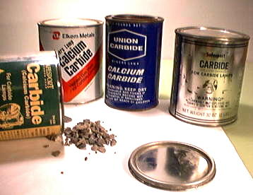

Inexpensive method for manufacturing Acetylene Gas discovered in Spray...
Union Carbide Company has it roots in Spray, NC
On the second day of May 1892, a Canadian by the name of Thomas Willson, who will forever be known as Thomas "Carbide" Willson, discovered quite by accident an inexpensive method for manufacturing Acetylene Gas. Wilson along with an American associate James Turner Moorhead had formed the "Willson Aluminum Company" in Spray North Carolina.
After several unsuccessful attempts to make aluminum in an electric furnace designed by Willson for that purpose, it was suggested that company attempt to produce metallic calcium which in turn would be used in the production of Aluminum. What Willson did not know was that it was even more difficult to produce metallic calcium than it was to produce Aluminum, so in ignorance Willson poured coal tar and lime into the furnace expecting to produce metallic calcium.
The end result of this experiment was a dark brittle mass that gave off gas when immersed in water. Willson and his employees were convinced they had successfully produced metallic calcium, they were wrong, they had in fact produced calcium carbide which when immersed in water produces acetylene gas. The Frenchman H. Lechatelier discovered the combustion of Oxygen and acetylene in 1895.
Union Carbide Company grew from work begun in 1891 by Major James Morehead and Canadian inventor Thomas Willson. Their determined but unsuccessful attempts to produce aluminum in an electric furnace led instead to two discoveries -- a way to make calcium carbide and a method to produce acetylene gas from that carbide. Calcium carbide -- known by the chemical formula CaC2 -- is a compound composed of the elements calcium and carbon. The brittle gray calcium carbide, formed from mixing coal tar and lime, released acetylene gas when placed in water. Confident that acetylene would achieve wide use in city lighting and heating, eight companies purchased the rights to manufacture calcium carbide from Morehead and Willson between 1892 and 1897. Seven of them failed, largely due to inadequate machinery and the inability to economically generate the huge amounts of electric power needed for production.
The plant built in Sault Ste. Marie, Michigan, by a group of businessmen from the Peoples Gas Light and Coke Company of Chicago succeeded due to its invention of a furnace that could produce calcium carbide round the clock at reasonable cost. Satisfied with the promise they saw in their enterprise, the group formed the Union Carbide Company in 1898.
A second Union Carbide Company plant was established a short time later at Niagara Falls, New York. In 1914, the group purchased the Canadian patents for calcium carbide and formed the Union Carbide Company of Canada Limited to operate a third plant in Ontario.
And it all started in Spray...